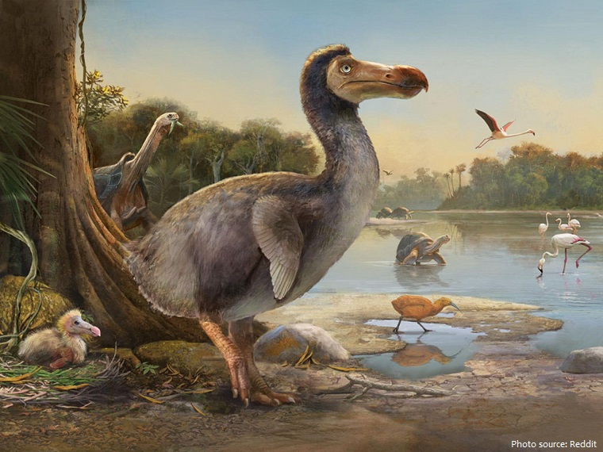

Dodo, (Raphus cucullatus), extinct flightless bird of Mauritius (an island of the Indian Ocean), one of the three species that
constituted the family Raphidae, usually placed with pigeons in the order Columbiformes but sometimes separated as an order (Raphiformes).
The other two species, also found on islands of the Indian Ocean, were the solitaires (Raphus solitarius of Réunion and Pezophaps solitaria
of Rodrigues). The birds were first seen by Portuguese sailors about 1507 and were exterminated by humans and their introduced animals.
The dodo was extinct by 1681, the Réunion solitaire by 1746, and the Rodrigues solitaire by about 1790. The dodo is frequently cited as
one of the most well-known examples of human-induced extinction and also serves as a symbol of obsolescence with respect to human
technological progress.